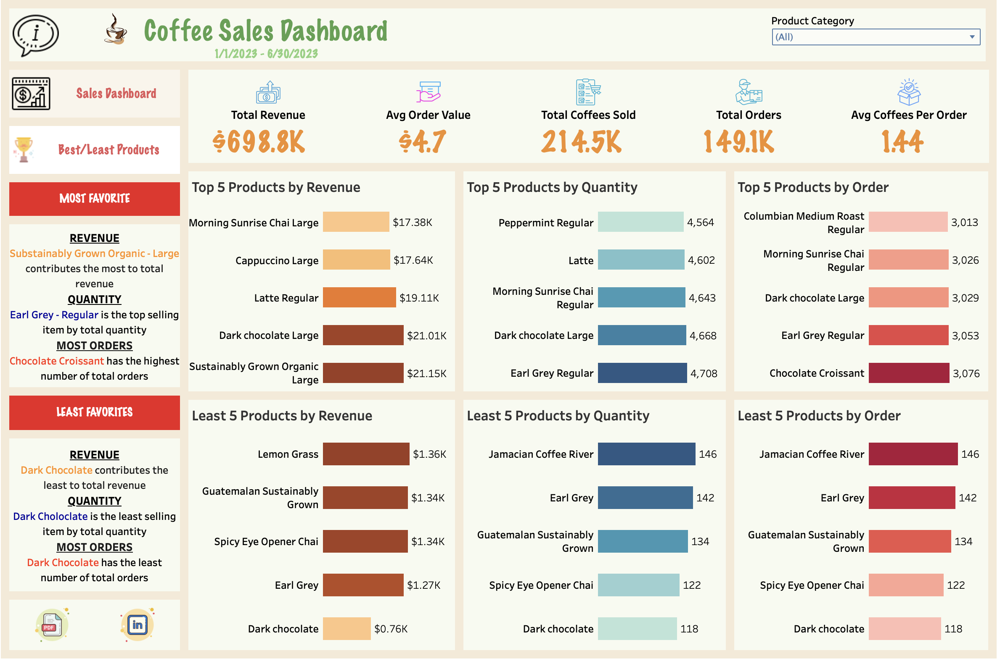
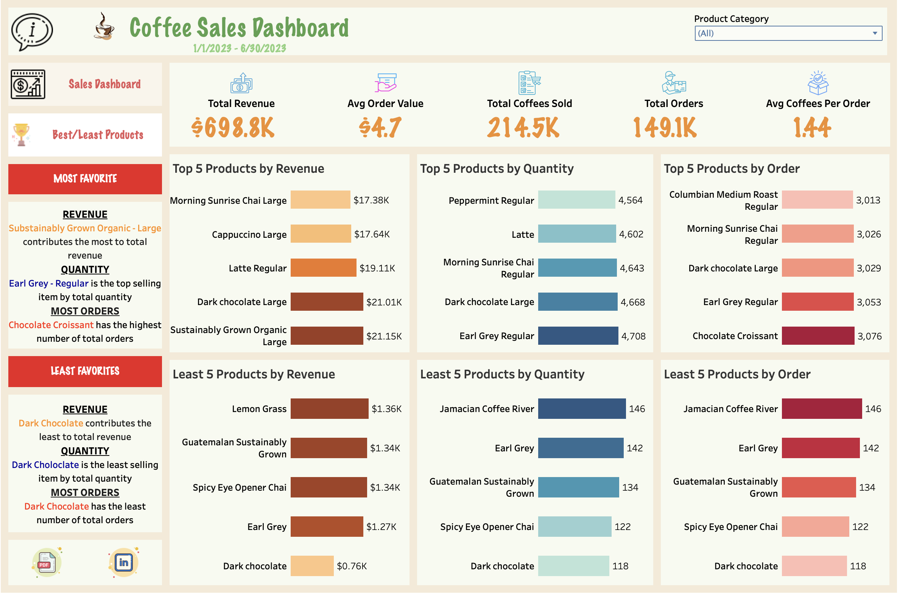

Coffee Sales Dashboard
Built with Tableau and Excel using Kaggle Coffee Sales Dataset
Dashboard Preview
 

This dashboard visualizes insights from a coffee shop’s sales data. Inspired by Tableau walkthroughs and adapted using a dataset from Kaggle, it highlights customer behavior, popular products, and store performance across multiple locations.
Tools & Technologies
- Excel (data cleaning & transformation)
- Tableau Public (interactive data visualization)
- Figma + Canva (icon and UI styling)
Dashboard Highlights
- Peak Sales by Hour and Week with Customer Insights
- Top & Least Selling Items by Orders, Revenue, and Quantity
- Store Performance Comparison (Astoria, Hell's Kitchen, Lower Manhattan)
- Interactive Filters: Product Category & Transaction Date
Key Insights
- Morning hours (7AM–10AM) drive most coffee sales
- Week-over-week growth indicates rising customer engagement
- Coffee is the leading product in revenue, orders, and units sold
- Top-performing item: Sustainably Grown Organic Large
- Chocolate Croissant leads in number of orders